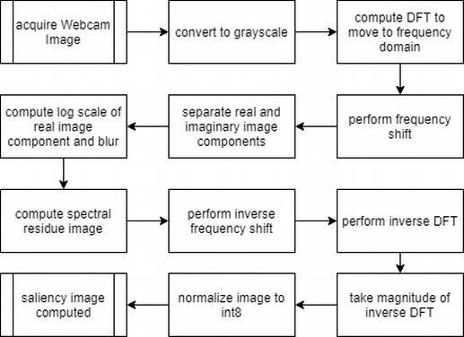
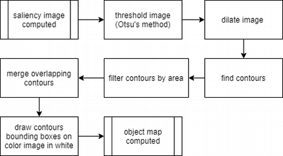
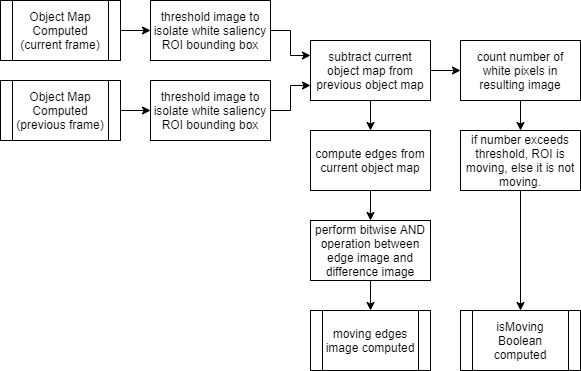
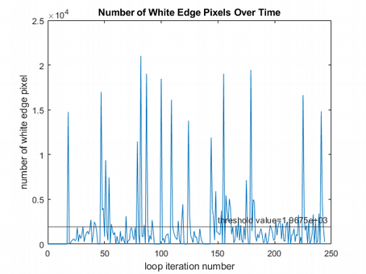

Salient ROI Motion Tracking
This project was performed as part of my research efforts for my robotics master's program. I sought to combine two existing algorithms to detect motion of salient regions of interest (ROIs). The first algorithm implemented was a saliency map computation algorithm developed by Sebastian Montabone, et. al in their work Human detection using a mobile platform and novel features derived from a visual saliency mechanism. The second algorithm developed here was a motion detection algorithm using an implementation of an algorithm developed by Jong-Hann Jean et. al in their work Robust Visual Servo Control of a Mobile Robot for Object Tracking Using Shape Parameters. Please see the sections below for a more in depth view of the overall developed algorithm and a demo video.
Developed Image Processing Pipeline
As previously mentioned, the first portion of this algorithm was implemented to compute a saliency map from a given webcam frame. This was done by first moving the image to the spatial frequency domain. From here, a log scale version of the spectral image was computed. This was then used to compute a spectral residue image. This spectral residue image was then moved back to the spatial image domain and was converted to a standard int8 OpenCV image for operations later in the image processing pipeline. A flowchart representation of this portion of the algorithm can be seen in the image below.
From here, an object map was constructed from the saliency map. This was done by thresholding the obtained saliency map to extract highly salient image components. From here, the resultant image was dilated. This dilation image was used to obtain saliency contours, which were then filtered by size. Overlapping contours were merged, and and detected saliency ROIs were drawn on the image in the form of a white box. This algorithm can be seen in a flowchart representation in the figure below.
Using the object map computed for the current frame and the previous frame, motion of the saliency ROI could be detected. This was done by first thresholding the object map image to issolate the white box within the image. From here, the two consecutive frames were subtracted. In the case that the ROI moved between the two frames, the resulting difference image would have a larger number of white pixels. If the ROI was not moving, there would be a smaller number of white pixels. If the number of white pixels has exceeded a given threshold, the ROI is considered moving. If the number of white pixels in the edge image is below the threshold, then the ROI is considered not moving.
The threshold of number of white pixels needed to be considered moving was determined experimentally. In this situation, the saliency target was moved back and forth in the frame, and the total number of white "edge image" pixels is output to a CSV file over the course of execution. From here, the average value of the number of white edge pixels is computed. A positive offset is added to this average, and this number is taken to be the threshold value. The plot of the number of white edge pixels in a given frame over the course a given algorithm execution can be seen in the image below.
Demo Video
The YouTube video below depicts a demonstration of the overall algorithm running. In this demonstration, a saliency target (a coaster with a very salient design), is moved back and forth within the frame. Within the video, the top left window depicts the saliency map, the bottom left depicts the object map, the bottom right depicts the difference image, and the top right depicts the moving edges image and the current state of the isMoving Boolean. Note that if no salient ROI is found, then nothing is displayed on that image. Notice that as long as the saliency target is moved slowly, an ROI is found in the image. When the target is moved quickly, the object map generation algorithm is not able to identify ROIs robustly. In the case of tracking whether or not the ROI is moving, the algorithm can detect when the ROI is not moving with great consistency. The algorithm can also determine when the target is changing motion states (i.e. stopping, starting motion), but had trouble determining if it is moving during the motion itself. This is likely due to the fact that the margin between the number of white pixels in the difference image when the ROI is stationary, and when the ROI is moving slowly is rather small. This leads to a simple thresholding technique not being sufficient enough to determine constant movement from stationary behavior. Working to reduce the noise in the detected saliency ROI could potentially increase the margin of white pixels in the difference image, potentially leading to better results. If this is not possible, a deep learning classification model could be built and trained to determine if the ROI is moving from learned latent features in the data.